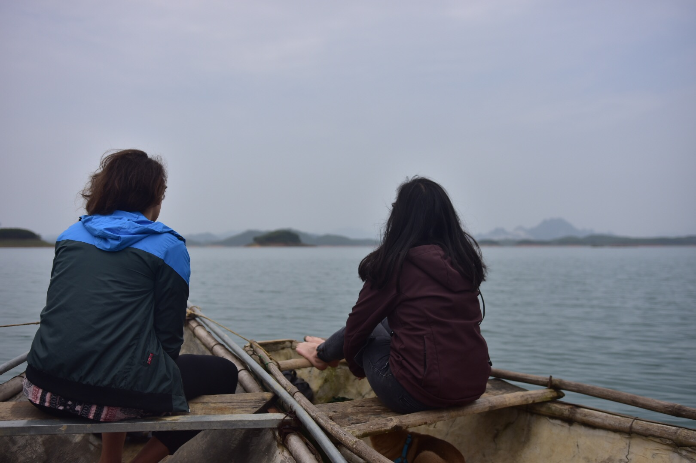
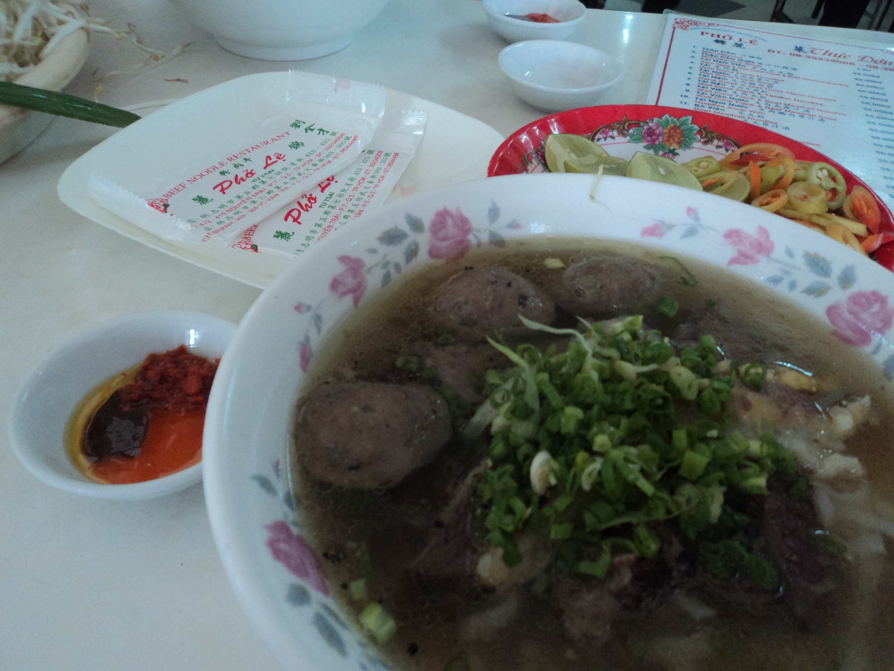
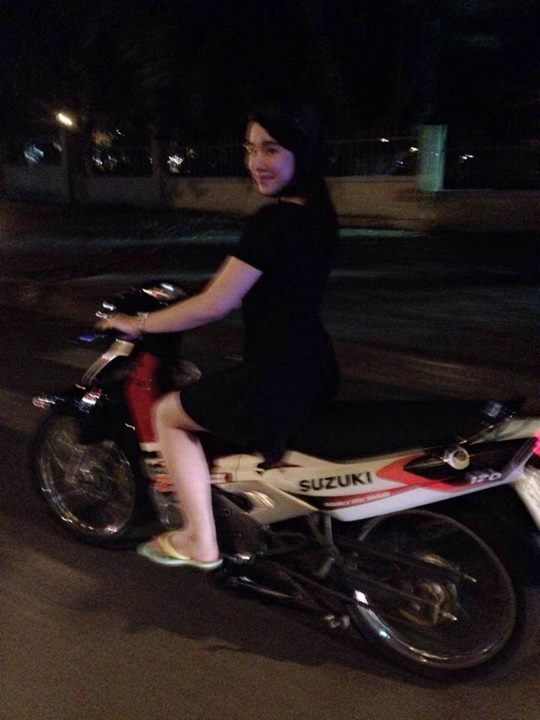
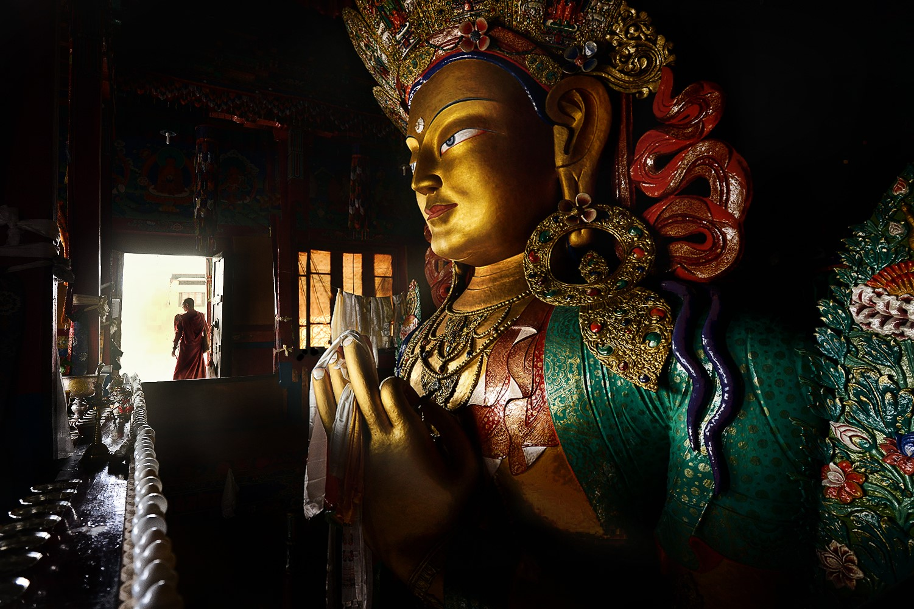
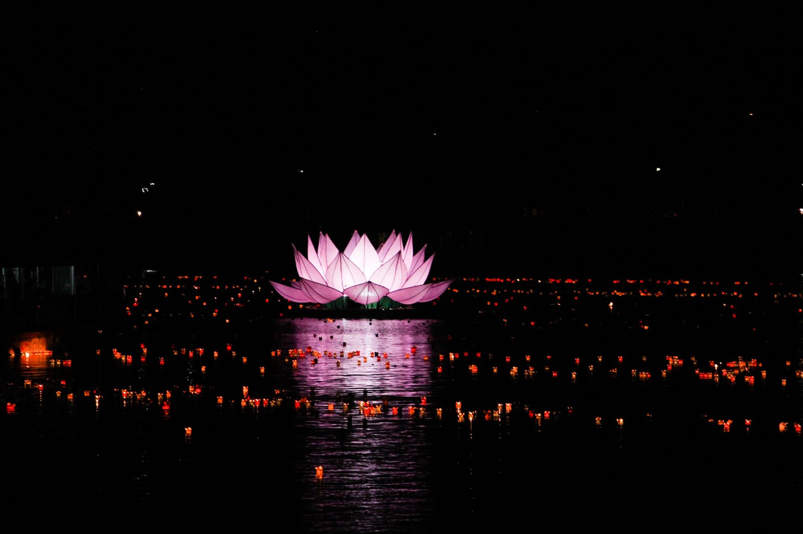
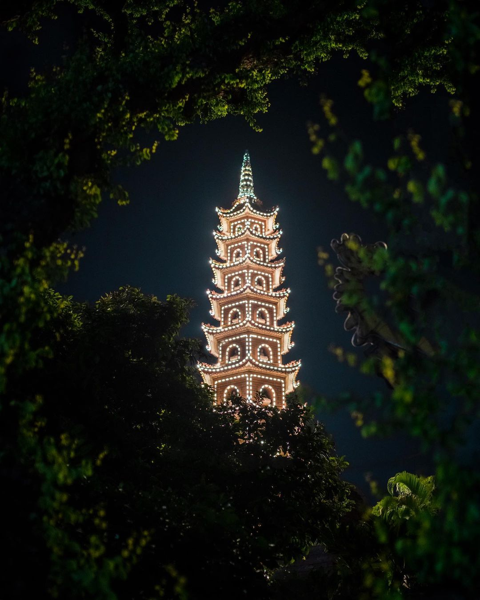

As a Vietnamese person, I was so excited to finally visit the country of my heritage. I made a plan to travel around Northern and Southern Vietnam to experience the different cultures and scenery for two weeks. I would mostly stay around Hương Sơn in Hanoi, though. One of my final destinations would be the Hương Temple complex there, where I was joined by my now-friend, Kiều.

Coming to Vietnam for the first time was so fun! It was very different from where I was born but it's a good kind of difference. It was like discovering a new part of my identity that I never really was able to see.
The main form of travel was motorbike. Getting used to crossing the road with people still driving was tough! Make sure to secure all your belongings as some of the drivers may zoom by the road and take them! Eating traditional Vietnamese food in the country itself was a unique experience. I was surprised with the price compared to the quality. I went to Phở Lệ in Ho Chi Minh City per reviews online and for only 60K VND (3.45 CAD, which is a bit more on the expensive side in Vietnam but still), I got a phenomenal-tasting bowl of phở!

I had some trouble understanding Vietnamese people in the North due to the difference in dialect, but that did not stop me from making acquaintances there. Up in Hương, I met Kiều Bùi, who would help guide me through the religion of Buddhism. She also helped me get used to the Northern Vietnamese dialect (thank goodness!).
Meet Kiều Bùi
Kiều is a third year student at Hà Tĩnh University, majoring in the Arts. Her father's side is Christian while her mother's is Buddhist. She herself practices Buddhism. Kiều takes a large interest in religious art, occasionally travelling around the world to view and analyze various pieces of art, although her favourite place is still the Vietnam National Fine Arts Museum. She's an amazing painter as well. If you are around Hanoi, please visit her art shop!

Creed
Kiều practices Mahayana Buddhism, one of the two main divisions of Buddhism. The other division, being Theravada Buddhism, is more traditional, with many being monks or nuns. Kiều showed a necklace that she was gifted that represented the Three Jewels of Buddhism, which guide the central beliefs of a Buddhist: Buddha, dharma and sangha, which was quite surprising as I expected some type of longer creed like the Apostles Creed. Dharma was familiar to me from Hinduism, demonstrating how closely related both religions are, Buddhism being developed from Hinduism.
The first jewel is Buddha, the teacher, which shows how we can do the same as Buddha to represent how us too can reach enlightenment. The Buddha teaches that people can break out of the cycle of reincarnation by becoming enlightened, reaching the state of nirvana. By following these teachings, Kiều hopes to become enlightened.
The second is dharma, which are the teachings of Buddha. Kiều gave me the main ones, which included:
- The Three Jewels
- The Three Universal Truths
- The Four Noble Truths
- The Noble Eightfold Path
The last was sangha, the Buddhist community. One's community can help the individual through their spiritual journey. This includes people like teachers and even Bodhisattvas, Buddhists who have reached enlightenment but choose to stay in reincarnation to help others reach it too. Mahayana Buddhists like Kiều may choose to remain in reincarnation while Theravada Buddhists strive for freedom.

There's a huge green statue of the Buddha in there along with a plethora of others. Every temple there had a statue of the Buddha somewhere. As well, there were candles and the smell of incense present—brings me back to some family gatherings. We stopped last at the Thiên Trù Pagoda, which is the central temple of the complex, where I observed people worshipping. Most people here who were doing so were silently meditating. Some made offerings which represented showing respect to the Three Jewels. They would light incense, light a candle then give an offering of some sort of fruit or flowers. Kiều made a big distinction to me, however, that Buddhists do not worship Buddha, nor any other deities. This is different from Christianity where one would worship God. Buddhists only highly regard Buddha and follow his teachings.
Code
Kiều explained that there really isn't one holy book, like the Bible, that contains all Mahayana beliefs, her branch accepting a variety of different texts of a variety of genres. Kiều gifted me a copy of the Jatakas, a rather humourous collection of the former lives of the Buddha, which serves to illustrate the life of a Bodhisattva. To save me from having to read millions of words in order to uncover the principles of Buddhism, Kiều summarized it to me over a dinner (bless her soul, thank you so much). She introduced me to the Five Precepts:
- Refraining from harming the living, hence why she is vegetarian. The dinner was vegetarian too, and it tasted delicious.
- Avoiding stealing
- Avoiding sexual misconduct
- Refraining from using false speech, such as lying
- Refraining from using false speech, such as lying
As a reform Jew herself, Shira does not literally follow all these laws, rather adapting them to her present life. Hasidic Jews, however, follow the Torah exactly. A large population of them live around this area in Greenpoint. Shira pointed out to me their clothing as an external example of their way of living. Women are only seen wearing modest dresses. The men are all wearing black suits with a kippot, shtreimel or a black hat.
Cult
I went with Kiều on the weekend to the Hương Temple complex. According to legend, this temple was discovered by a monk who meditated around the mountains where this complex is situated. The temple itself is named after where it is thought the Buddha practiced asceticism. It was a wonderfully designed place, with decorative architecture and a lot of nature. Kiều made sure to enlighten me with the histories of each of the temples we visited. We also went to the Hương Tích Cave, which felt like entering a dragon, it's a great experience.
There's a huge green statue of the Buddha in there along with a plethora of others. Every temple there had a statue of the Buddha somewhere. As well, there were candles and the smell of incense present—brings me back to some family gatherings. We stopped last at the Thiên Trù Pagoda, which is the central temple of the complex, where I observed people worshipping. Most people here who were doing so were silently meditating. Some made offerings which represented showing respect to the Three Jewels. They would light incense, light a candle then give an offering of some sort of fruit or flowers. Kiều made a big distinction to me, however, that Buddhists do not worship the Buddha, nor any other deities. This is different from Christianity where one would worship God. Buddhists only highly regard the Buddha and follow his teachings.
Community
On May 23, I went with Kiều to celebrate Vesak, which takes place on the day of the full moon in during that month. Kiều was pretty excited to show me this one as Vesak is a celebration of the Buddha's birth and enlightenment. I went with Kiều to observe the celebration at night time at the Trấn Quốc Pagoda, as that lined up with our schedules. However, people celebrate Vesak for the whole day. It was around 8:20 PM there, which was a few hours after the sunset, so we couldn't see much, but that was outshined by the myriad of lights in the area. Most noticeable was the huge lotus lantern.

Kiều told me a while ago that lotus flowers are a key symbol in Buddhism. Around the time that we went to the Hương Temple, we stopped by to visit a lotus pond in Xuân Đỉnh. She told me how important the lotus was in Buddhism by showing how they grow. The water in the pond was pretty muddy, evident by how my shoes looked after the visit. However, the lotus grew in this area despite the conditions. Therefore, the lotus represents enlightenment, as well as the suffering in samsara, or life, death and rebirth, that the person endured. Even though the lotus is rooted in the muddy waters of suffering, it blossoms clear and beautifully in the end. This makes lotus such a fitting symbol during Vesak especially, to represent the blooming of the one Buddhists base their life around through his teachings.

There were also many chanting, meditating and giving offerings. Paired with the multitude of lanterns over the waters gave the place a very calming atmosphere. It felt like the birth of something new—refreshing. This was my last day here so achieving a feeling like this was amazing. It allowed me to reflect on all that I learned in this trip, the new knowledge that came out of it that I will be able to use for the rest of my life.
Farewell, Vietnam!
A big thank-you to Kiều for helping me so much in this whole trip. You gave me an unforgettable experience in Vietnam. Thank you for the art, by the way!
Đây là một trải nghiệm vui vẻ và thú vị. Tôi chắc chắn sẽ ghé thăm Vietnam một lần nữa. Cảm ơn bạn đã hướng dẫn và chỉ cho tôi tham quan xung quanh Vietnam!